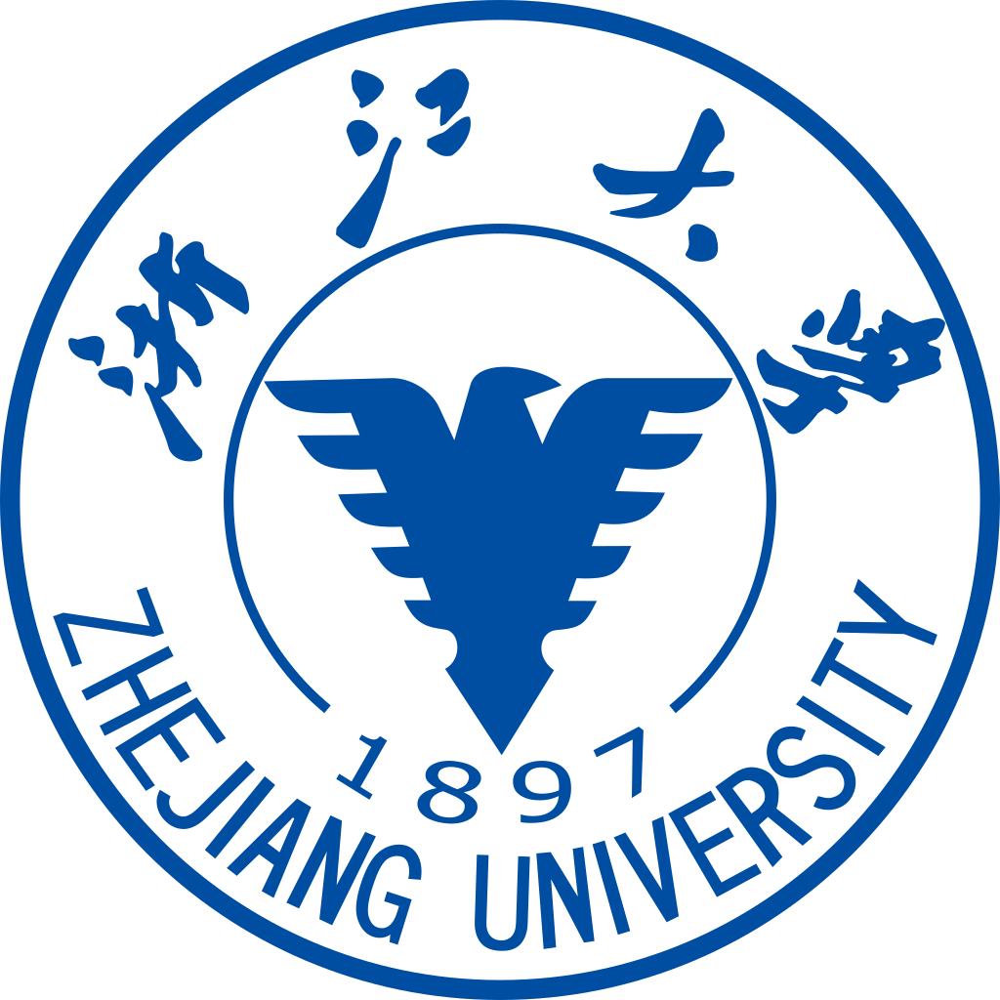
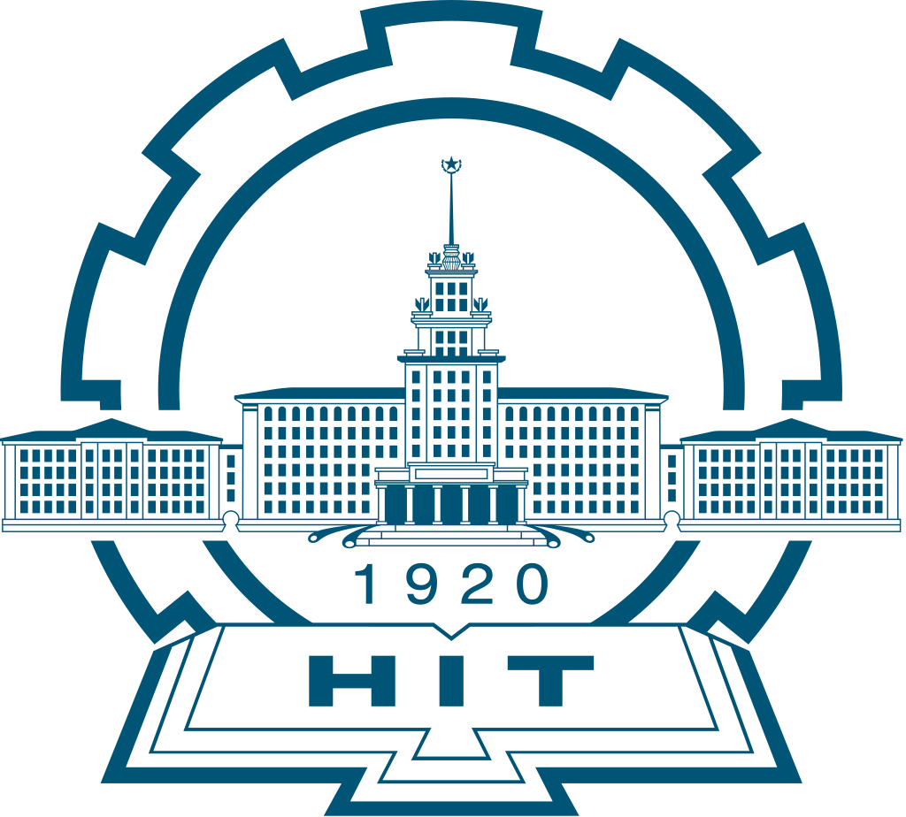

Zhejiang University
Master's in Software Engineering
School of Software Technology
Sep. 2025 – Jun. 2028 (expected)
Curriculum Vitae · Master's student, Zhejiang University

Master's in Software Engineering
School of Software Technology
Sep. 2025 – Jun. 2028 (expected)

B.Eng. in Intelligent Vehicle Engineering
School of Automotive Engineering
Sep. 2021 – Jun. 2025
EMNLP 2026 Main Conference. † Corresponding authors.
AAAI 2027 submission, under review.
Apr. 2025 – present